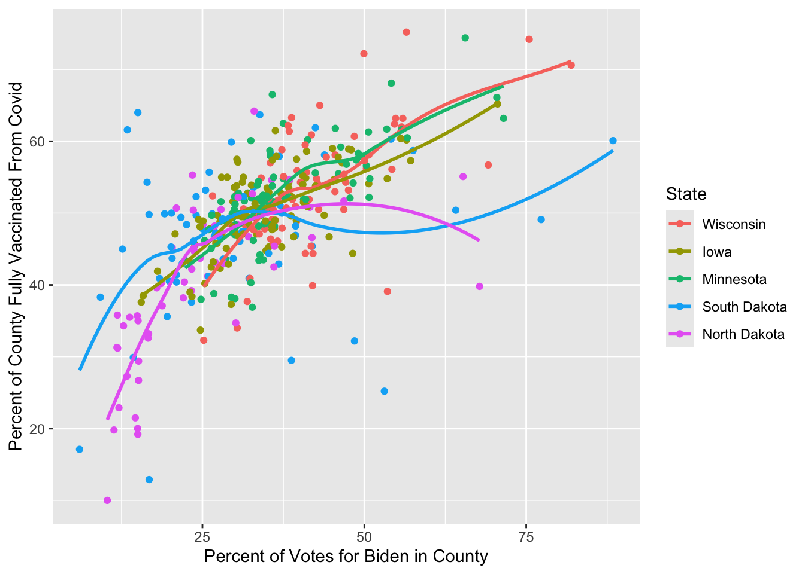
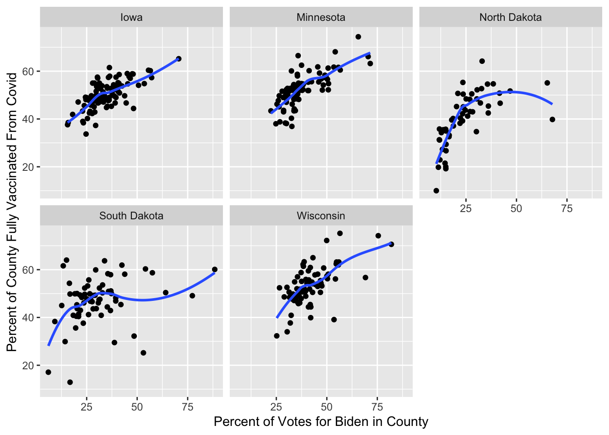
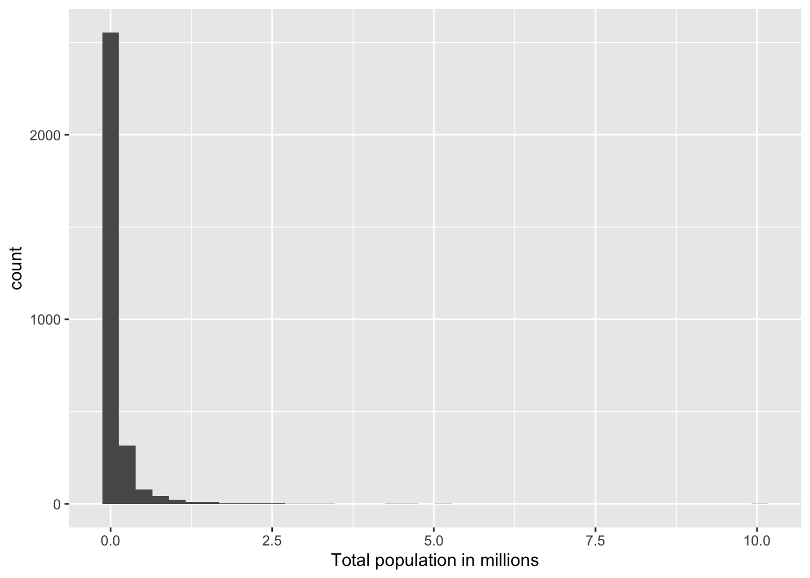
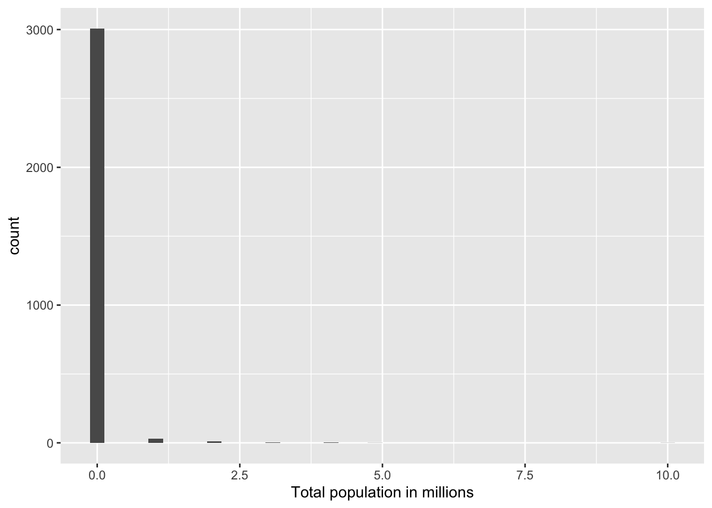
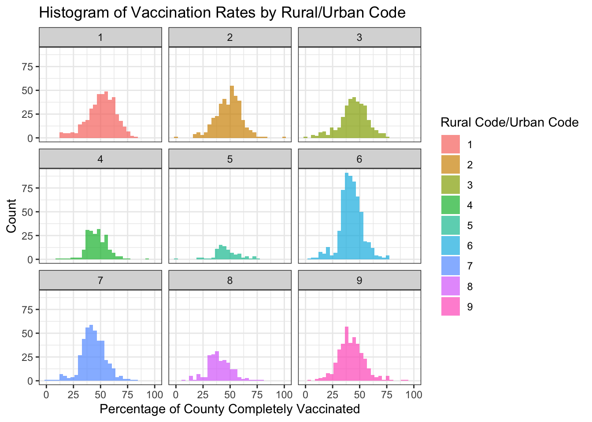
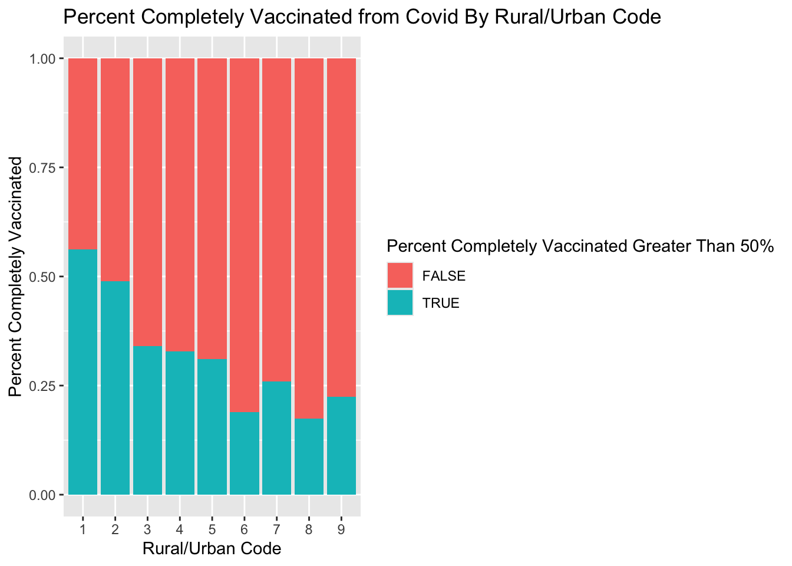
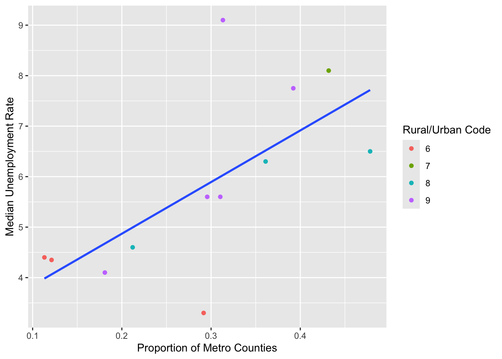

You can download this .qmd file from here. Just hit the Download Raw File button.
Determinants of COVID vaccination rates
First, a little detour to describe several alternatives for reading in data:
If you navigate to my Github account, and find the 264_fall_2024 repo, there is a Data folder inside. You can then click on vacc_Mar21.csv to see the data we want to download. This link should also get you there, but it’s good to be able to navigate there yourself.
Rows: 3053 Columns: 14
── Column specification ────────────────────────────────────────────────────────
Delimiter: ","
chr (4): state, county, region, metro_status
dbl (10): rural_urban_code, perc_complete_vac, tot_pop, votes_Trump, votes_B...
ℹ Use `spec()` to retrieve the full column specification for this data.
ℹ Specify the column types or set `show_col_types = FALSE` to quiet this message.
Approach 1: create a Data folder in the same location where this .qmd file resides, and then store vaccinations_2021.csv in that Data folder
2
Approach 2: give R the complete path to the location of vaccinations_2021.csv, starting with Home (~)
3
Approach 3: link to our course webpage, and then know we have a Data folder containing all our csvs
4
Approach 4: navigate to the data in GitHub, hit the Raw button, and copy that link
A recent Stat 272 project examined determinants of covid vaccination rates at the county level. Our data set contains 3053 rows (1 for each county in the US) and 14 columns; here is a quick description of the variables we’ll be using:
state = state the county is located in
county = name of the county
region = region the state is located in
metro_status = Is the county considered “Metro” or “Non-metro”?
rural_urban_code = from 1 (most urban) to 9 (most rural)
perc_complete_vac = percent of county completely vaccinated as of 11/9/21
tot_pop = total population in the county
votes_Trump = number of votes for Trump in the county in 2020
votes_Biden = number of votes for Biden in the county in 2020
perc_Biden = percent of votes for Biden in the county in 2020
ed_somecol_perc = percent with some education beyond high school (but not a Bachelor’s degree)
ed_bachormore_perc = percent with a Bachelor’s degree or more
unemployment_rate_2020 = county unemployment rate in 2020
median_HHincome_2019 = county’s median household income in 2019
Consider only Minnesota and its surrounding states (Iowa, Wisconsin, North Dakota, and South Dakota). We want to examine the relationship between the percentage who voted for Biden and the percentage of complete vaccinations by state. Generate two plots to examine this relationship:
A scatterplot with points and smoothers colored by state. Make sure the legend is ordered in a meaningful way, and include good labels on your axes and your legend. Also leave off the error bars from your smoothers.
vaccine_data |>filter(state =="Iowa"| state =="Wisconsin"| state =="North Dakota"| state =="South Dakota"| state =="Minnesota") |>ggplot(aes(x = perc_Biden, y = perc_complete_vac, color =fct_reorder2(state, perc_Biden, perc_complete_vac))) +geom_point() +geom_smooth(se =FALSE) +labs(x ="Percent of Votes for Biden in County", y ="Percent of County Fully Vaccinated From Covid", color ="State")
`geom_smooth()` using method = 'loess' and formula = 'y ~ x'

One plot per state containing a scatterplot and a smoother.
Describe which plot you prefer and why. What can you learn from your preferred plot?
vaccine_data |>filter(state =="Iowa"| state =="Wisconsin"| state =="North Dakota"| state =="South Dakota"| state =="Minnesota") |>ggplot(aes(x = perc_Biden, y = perc_complete_vac)) +facet_wrap(~state) +geom_point() +geom_smooth(se =FALSE) +labs(x ="Percent of Votes for Biden in County", y ="Percent of County Fully Vaccinated From Covid")
`geom_smooth()` using method = 'loess' and formula = 'y ~ x'

I prefer the second graph because I can see the data better after using facet wrap. Personally, after more than 3 or 4 states with the smoothers makes it a little but hard to see and interpret. From my preferred plot we can see that all states see a positive trend line with the higher percentage of votes for Biden the higher percentage that the county is fully vaccinated from Covid. Iowa, Minnesota, and Wisconsin have super similar trends where there is somewhat a upward cluster in the 25%-50% of votes for Biden and 40%-60% percent fully vaccinated. Where as for North Dakota there is a steeper trend line however a majority of the counties are below 45% fully vaccination rates and only two counties have more than 50% of the county vote for Biden with those vaccination rates being 40% and 55%.
We wish to compare the proportions of counties in each region with median household income above the national median ($69,560).
Fill in the blanks below to produce a segmented bar plot with regions ordered from highest proportion above the median to lowest.
Create a table of proportions by region to illustrate that your bar plot in (a) is in the correct order (you should find two regions that are really close when you just try to eyeball differences).
Explain why we can replace fct_relevel(region, FILL IN CODE) with
vaccine_data |>mutate(HHincome_vs_national =ifelse(median_HHincome_2019 <69560, FILL IN CODE)) |>mutate(region_sort =fct_relevel(region, FILL IN CODE)) |>ggplot(mapping =aes(x = region_sort, fill = HHincome_vs_national)) +geom_bar(position ="fill")
We want to examine the distribution of total county populations and then see how it’s related to vaccination rates.
Carefully and thoroughly explain why the two histograms below provide different plots.
vaccine_data |>mutate(tot_pop_millions = tot_pop /1000000) |>ggplot(mapping =aes(x = tot_pop_millions)) +geom_histogram(bins =40) +labs(x ="Total population in millions")

vaccine_data |>mutate(tot_pop_millions = tot_pop %/%1000000) |>ggplot(mapping =aes(x = tot_pop_millions)) +geom_histogram(bins =40) +labs(x ="Total population in millions")

Find the top 5 counties in terms of total population.
Plot a histogram of logged population and describe this distribution.
Plot the relationship between log population and percent vaccinated using separate colors for Metro and Non-metro counties (be sure there’s no 3rd color used for NAs). Reduce the size and transparency of each point to make the plot more readable. Describe what you can learn from this plot.
Produce 3 different plots for illustrating the relationship between the rural_urban_code and percent vaccinated. Hint: you can sometimes turn numeric variables into categorical variables for plotting purposes (e.g. as.factor(), ifelse()).
State your favorite plot, why you like it better than the other two, and what you can learn from your favorite plot. Create an alt text description of your favorite plot, using the Four Ingredient Model. See this link for reminders and references about alt text.
# PLOT #1vaccine_data |>mutate(rural_urban_code_fac =as.factor(rural_urban_code)) |>ggplot(aes(x = perc_complete_vac, fill = rural_urban_code_fac)) +facet_wrap(~rural_urban_code_fac) +geom_histogram(alpha = .7) +theme_bw() +labs(x ="Percentage of County Completely Vaccinated",y ="Count", fill ="Rural Code/Urban Code",title ="Histogram of Vaccination Rates by Rural/Urban Code") +theme(legend.position ="none")
`stat_bin()` using `bins = 30`. Pick better value with `binwidth`.

This is my favorite plot, because it tells me a lot about the data (not saying the others don’t) from this I can get a read of how many counties are labeled/assigned to a distinct rural/urban code opposed to the density plot in which it shows the percentage of however many are with that code. As well as how it is faceted it is easier to read and interpret the data and can give us information that for the most urban county (code 1) there are more counts of counties that are in the 40%-60% fully vaccinated opposed to the most rural community (code 9). It is easy to dissect the counts from code to code with this histogram and I appreciate it. I wouldn’t use this as a final plot however it is a good place to start.
Alt-text. This is a facted histogram showing the relationship between percentage of a county that is completely vaccinated against Covid-19 as of 11/9/21 (x axis) and the amount of counties. It is faceted by the rural/urban code of the county, where 1 is most urban to 9 most rural. We can see the percentage of vaccination rates ranging from 0% to 99.9%. The count ranges from 0- 85ish. The highest number of counties with a similar percentage would be for code 6 with over 85 counts in the 40ish percentage rate being fully vaccinated, this is also its peak. It is also visible that there are the most counties with rural/urban code 6 because of the amount of counts in the histogram itself, it is visibly bigger/thicker than the others. Rural/Urban code 5 has the least amount of counties with the code number. For all of the rural/urban codes the histogram is normally distributed with the peak of the lying anywhere between 38% and 50%. Histograms 4, and 8 have slightly right skewed distributions and every other histogram has a normal distributions.
labs(x ="Percentage of County Completely Vaccinated",y ="Density",title ="Density Plot of Vaccination Rates by Rural/Urban Code",fill ="Rural Code/Urban Code") +theme(legend.position ="none")
NULL
# PLOT #3vaccine_data |>mutate(rural_urban_code_fac =as.factor(rural_urban_code)) |>group_by(rural_urban_code_fac) |>ggplot(aes(x = rural_urban_code_fac, fill = perc_complete_vac >50)) +geom_bar(position ="fill") +labs(x ="Rural/Urban Code",y ="Percent Completely Vaccinated",fill ="Percent Completely Vaccinated Greater Than 50%",title ="Percent Completely Vaccinated from Covid By Rural/Urban Code" )

BEFORE running the code below, sketch the plot that will be produced by R. AFTER running the code, describe what conclusion(s) can we draw from this plot?
vaccine_data |>filter(!is.na(perc_Biden)) |>mutate(big_states =fct_lump(state, n =10)) |>group_by(big_states) |>summarize(IQR_Biden =IQR(perc_Biden)) |>mutate(big_states =fct_reorder(big_states, IQR_Biden)) |>ggplot() +geom_point(aes(x = IQR_Biden, y = big_states))
ANSWER From this plot we can make the conclusion that in the states with a larger IQR, there are counties that vary with the % of people in that county that voted for Biden. Opposed the the sates with a smaller IQR, such as Tennessee or Missouri which means that the counties have more similar % of people in that county that voted for Biden.
In this question we will focus only on the 12 states in the Midwest (i.e. where region == “Midwest”).
Create a tibble with the following information for each state. Order states from least to greatest state population.
number of different rural_urban_codes represented among the state’s counties (there are 9 possible)
Use your tibble in (a) to produce a plot of the relationship between proportion of Metro counties and median unemployment rate. Points should be colored by the number of different rural_urban_codes in a state, but a single linear trend should be fit to all points. What can you conclude from the plot?
ANSWER
midwest_info |>mutate(rural_urban_rep_fac =as.factor(rural_urban_rep)) |>ggplot(aes(x = metro, y = median_unemp)) +geom_point(aes(color = rural_urban_rep_fac)) +geom_smooth(method ="lm", se =FALSE) +labs(color ="Rural/Urban Code",x ="Proportion of Metro Counties",y = ("Median Unemployment Rate") )
`geom_smooth()` using formula = 'y ~ x'

I can conclude that rural/urban code 6 has a lower median unemployment rate and lower proportion on metro counties compare to rural/urban code 8 or 9. There is a positive linear trend, as proportion of metro goes increases median unemployment rate increases.
Generate an appropriate plot to compare vaccination rates between two subregions of the US: New England (which contains the states Maine, Vermont, New Hampshire, Massachusetts, Connecticut, Rhode Island) and the Upper Midwest (which, according to the USGS, contains the states Minnesota, Wisconsin, Michigan, Illinois, Indiana, and Iowa). What can you conclude from your plot?
In this next section, we consider a few variables that could have been included in our data set, but were NOT. Thus, you won’t be able to write and test code, but you nevertheless should be able to use your knowledge of the tidyverse to answer these questions.
Here are the hypothetical variables:
HR_party = party of that county’s US Representative (Republican, Democrat, Independent, Green, or Libertarian)
people_per_MD = number of residents per doctor (higher values = fewer doctors)
perc_over_65 = percent of residents over 65 years old
perc_white = percent of residents who identify as white
Describe the tibble temp created above. What would be the dimensions? What do rows and columns represent?
ANSWER Dimensions: 3 rows and 4 columns new_perc_vac - removes all counties of over 95% vacc rate, makes them NA MD_group - each row is a grouping of people per doctor, either a 1 2 or 3 Columns: - n is number of counties - mean_perc_vac, is the avg of new_perc_vac, removes NA values - mean_white, is the avg of perc_white, removes NA values
What would happen if we replaced new_perc_vac = ifelse(perc_complete_vac > 95, NA, perc_complete_vac) with new_perc_vac = ifelse(perc_complete_vac > 95, perc_complete_vac, NA)?
ANSWER It would keep all perc_complete_vac that are greater than 95 and then set all other values to NA.
What would happen if we replaced mean_white = mean(perc_white, na.rm = TRUE) with mean_white = mean(perc_white)?
ANSWER It will not be able to calculate the means. Means would be NA.
What would happen if we removed group_by(MD_group)?
ANSWER If we removed it, then it would not group by the 3 split groups, for summary statistics (mean) would do for the entire dataset and we would have 1 row
Hypothetical R chunk #2:
# Hypothetical R chunk 2ggplot(data = vaccine_data) +geom_point(mapping =aes(x = perc_over_65, y = perc_complete_vac, color = HR_party)) +geom_smooth()temp <- vaccine_data |>group_by(HR_party) |>summarise(var1 =n()) |>arrange(desc(var1)) |>slice_head(n =3)vaccine_data |>ggplot(mapping =aes(x =fct_reorder(HR_party, perc_over_65, .fun = median), y = perc_over_65)) +geom_boxplot()
Why would the first plot produce an error?
ANSWER The first plot would produce an error because geom_smooth() doesn’t have anything inside of it. There would be trouble computing that layer since the aes only are “set” for geom_point. geom_smooth doesn’t know what to plot for the x and y.
Describe the tibble temp created above. What would be the dimensions? What do rows and columns represent?
ANSWER Dimensions: 3 rows and 2 columns Top 3 rows of the HR_Party, represents the party that shows up the most after the summarize
Columns: - HR_Party represents our different party, is what we use for grouping, (Republican, Democrat, Independent, Green, or Libertarian) - var1 is the number of times each value of HR_Party shows up in dataset, summarizes how frequently it appears in the dataset based on the grouping variable
What would happen if we replaced fct_reorder(HR_party, perc_over_65, .fun = median) with HR_party?
ANSWER It wouldn’t order HR_party based of the median of percent is over 65 years old, but order based on HR_party, which would now appear in the order that it appears in the dataset.
Hypothetical R chunk #3:
# Hypothetical R chunk 3vaccine_data |>filter(!is.na(people_per_MD)) |>mutate(state_lump =fct_lump(state, n =4)) |>group_by(state_lump, rural_urban_code) |>summarise(mean_people_per_MD =mean(people_per_MD)) |>ggplot(mapping =aes(x = rural_urban_code, y = mean_people_per_MD, colour =fct_reorder2(state_lump, rural_urban_code, mean_people_per_MD))) +geom_line()
Describe the tibble piped into the ggplot above. What would be the dimensions? What do rows and columns represent?
ANSWER Dimensions: min 5 rows, max 45 rows, 3 columns. Rows will be the 4 states that show up the most with an “Other”, and their respective combinations with the rural_urban_code Columns: - state_lump,represents the top 4 most frequent states, with all other states lumped into an “Other” category. - mean_people_per_MD, is the mean of people_per_MD for each combo of state_lump and rural_urban_code - rural_urban_code, from 1 (most urban) to 9 (most rural)
Carefully describe the plot created above.
ANSWER The plot uses rural_urban_code as the x axis, (so 1-9) and then mean_people_per_MD as the y axis. Different colored lines per state_lump and rural_urban code. The colors of the lines are ordered by state_lump, then rural_urban_code, then mean_people_per_MD.
What would happen if we removed filter(!is.na(people_per_MD))?
ANSWER The NA values will not be removed. We would have trouble in the summarize when we tried to find the mean of people_per_md.
What would happen if we replaced fct_reorder2(state_lump, rural_urban_code, mean_people_per_MD) with state_lump?
ANSWER It would order it in the original order of state_lump, the order that it appears in the dataset. The lines would not be colored soley on the state_lump and not take into account order of mean and rural_urban_code